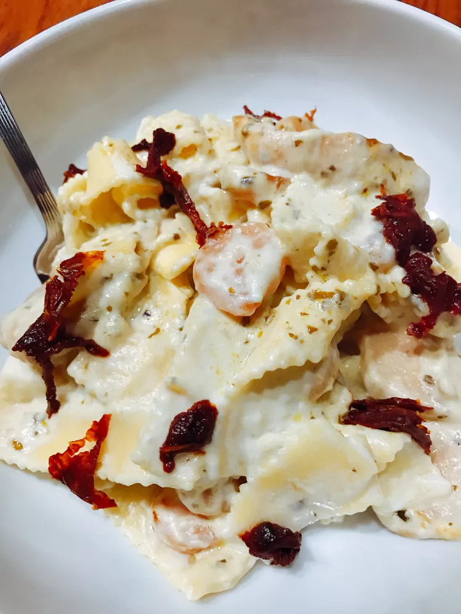

Chicken and Shrimp Alfredo

Description
Chicken and Shrimp alfredo is really bussing like that.
it really does break the scale FRFR! Sheesh! Anyways,
You'll love my twist on this creamy Alfredo. It's a little heavy on the hips,
but worth every bite. A perfect match with a nice green salad, and you must have garlic
bread to sop up the creamy sauce.
Ingredients
1 (16 ounce) package trotolle dry pasta
4 tablespoons extra-virgin olive oil, divided
4 cloves garlic, thinly slided
1 tablespoon dried basil
1/2 teaspoon red pepper flakes
1/2 teaspoon ground black pepper
2 pounds chicken breast, cut into strips
1 stick butter
1 (8 ounce) package cream cheese, cut into small pieces
2 cups milk, or more as needed
2 cups heavy cream
3 cups shaved Parmigiano-Reggiano cheese
3 tablespoons pesto
3 tablespoons sun-dried tomatoes packed in oil, drained and chopped
1/2 pound uncoooked medium shrimp, peeled and deveined
Steps
- Bring a large pot of lightly salted water to a boil; add 2 tablespoons olive oil.
Add trottole and cook at a boil until tender yet firm to the bite, about 9 minutes;drain.
- Heat remaining olive oil in a large skillet and add garlic, basil, red pepper flakes, and black pepper. Add chicken; cook and stir
until browned, about 10 minutes.
- Melt butter over a medium heat in the large pot used to make the pasta. Add cream cheese and stir until creamy...
- stir cooked chicken and pasta into the sauce. Add shrimp, cook and stir shrimp turns orange, 6 to 8 minutes more.